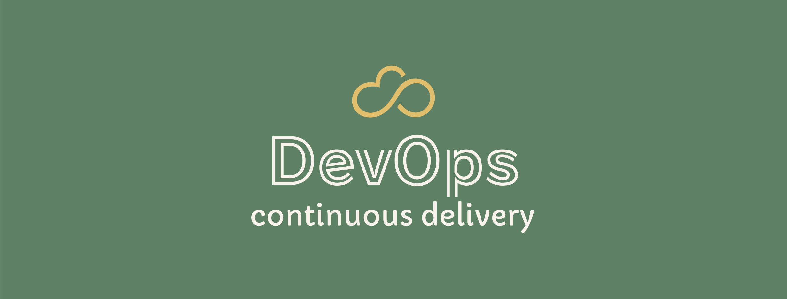
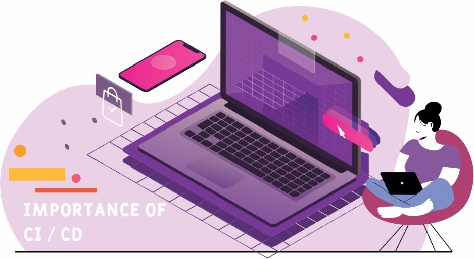

DevOps#

DevOps is a combination of practices, tools, and cultural philosophies that aims to bridge the gap between software development (Dev) and IT operations (Ops). The main goal of DevOps is to improve collaboration between the development and operations teams, streamline the software development lifecycle, and deliver software faster, more reliably, and with higher quality.
DevOps encompasses several key principles and practices:
Continuous Integration (CI): In CI, developers merge their code changes into a shared repository frequently, often multiple times a day. Automated builds and tests are triggered upon each integration, allowing teams to detect and fix issues early in the development process.
Continuous Delivery (CD): CD is an extension of CI, aiming to ensure that the code is always in a releasable state. This involves automating the deployment process and making sure that the software can be released to production at any time with minimal manual intervention.
Infrastructure as Code (IaC): IaC is the practice of managing and provisioning infrastructure resources (such as networks, servers, and storage) using code and version control systems. This allows teams to automate infrastructure management, improve consistency, and reduce manual errors.
Monitoring and Logging: Monitoring and logging involve collecting and analyzing performance metrics, logs, and other data from applications and infrastructure. This helps teams identify issues, troubleshoot problems, and optimize performance.
Collaboration and Communication: DevOps emphasizes breaking down silos between development and operations teams. This involves fostering a culture of open communication, sharing knowledge, and working together to achieve common goals.
Feedback and Continuous Improvement: DevOps encourages a culture of learning, experimentation, and adaptation. Teams collect feedback from various sources (e.g., monitoring, user feedback) and use this information to iteratively improve their processes, tools, and products.

Benefits of DevOps#
By adopting DevOps practices, organizations can enjoy numerous benefits that enable them to deliver better software, faster, and more reliably. This helps them stay competitive in the marketplace, meet customer demands, and drive business growth.
Faster time to market: By streamlining and automating the software development and deployment processes, DevOps enables organizations to release software more quickly and frequently. This helps businesses respond faster to market changes and customer needs.
Improved collaboration: DevOps encourages a culture of collaboration and communication between development and operations teams. This breaks down silos and helps teams work together more effectively to achieve common goals.
Higher quality software: With continuous integration, automated testing, and continuous delivery, DevOps practices help organizations catch and fix issues early in the development process. This results in higher quality software with fewer defects and better performance.
Enhanced reliability: DevOps practices like Infrastructure as Code (IaC) and automated deployment help ensure that infrastructure and application configurations are consistent across environments. This reduces the risk of failures and outages caused by configuration drift and human error.
Greater efficiency: DevOps practices automate repetitive tasks, like building, testing, and deploying code. This frees up time for development and operations teams to focus on more valuable tasks, like feature development, performance optimization, and problem-solving.
Reduced costs: By improving efficiency, reducing downtime, and streamlining processes, DevOps can help organizations reduce their operational costs and resource usage.
Better scalability: DevOps practices, like IaC and containerization, make it easier for organizations to scale their infrastructure and applications to meet changing demands.
Continuous improvement: DevOps promotes a culture of learning, experimentation, and feedback. This encourages teams to continuously improve their processes, tools, and products, fostering innovation and growth.
How DevOps works#
DevOps works by integrating various components, such as tools, methodologies, and cultural shifts, to achieve these goals.
Here’s a high-level overview of how DevOps works:
Culture shift: DevOps starts with fostering a culture of collaboration, communication, and shared responsibility between development and operations teams. This involves breaking down silos, encouraging open communication, and creating an environment where teams work together to achieve common objectives.
Agile development: DevOps builds on Agile methodologies that promote iterative development, frequent releases, and continuous improvement. Teams work in small, cross-functional units and follow practices like Scrum or Kanban to manage their work efficiently.
Continuous Integration (CI): CI involves developers merging their code changes into a shared repository frequently, often multiple times a day. Automated builds and tests are triggered upon each integration, allowing teams to detect and fix issues early in the development process.
Continuous Delivery (CD): CD extends CI by ensuring that the code is always in a releasable state. This involves automating the deployment process and making sure that the software can be released to production with minimal manual intervention.
Infrastructure as Code (IaC): IaC is the practice of managing and provisioning infrastructure resources using code and version control systems. This allows teams to automate infrastructure management, improve consistency, and reduce manual errors.
Automation: DevOps relies heavily on automation to streamline processes and reduce manual effort. This includes automating builds, tests, deployments, infrastructure provisioning, and monitoring.
Monitoring and feedback: DevOps emphasizes collecting and analyzing performance metrics, logs, and other data from applications and infrastructure. Teams use this information to identify issues, troubleshoot problems, optimize performance, and continuously improve their processes and products.
Continuous learning and improvement: DevOps encourages a culture of learning, experimentation, and adaptation. Teams use feedback from various sources (e.g., monitoring, user feedback) to iteratively improve their processes, tools, and products.
DevOps Tools#
There are a wide range of DevOps tools available that help automate and streamline various aspects of the software development and operations processes. These tools support collaboration, continuous integration and delivery, infrastructure management, monitoring, and more. Here is a list of popular DevOps tools, grouped by categories:
Version Control:#
Git: A widely-used distributed version control system that enables collaboration and tracks changes in the codebase.
GitHub, GitLab, Bitbucket: Web-based platforms that provide Git repository hosting, issue tracking, and collaboration features.
Continuous Integration and Continuous Delivery (CI/CD):#
Jenkins: An open-source automation server that supports building, testing, and deploying code changes.
GitLab CI/CD: A built-in CI/CD solution within GitLab, offering pipeline management and automation.
GitHub Actions: A CI/CD solution that integrates with GitHub repositories and enables automating workflows.
CircleCI: A cloud-based CI/CD platform that simplifies pipeline setup and management.
Travis CI: Another cloud-based CI/CD service that integrates with popular version control systems.
Bamboo: An on-premises CI/CD solution by Atlassian that integrates with other Atlassian tools like Jira and Bitbucket.
Configuration Management and Infrastructure as Code (IaC):#
Ansible: An open-source configuration management and application deployment tool that uses a simple, human-readable language (YAML) for automation.
Puppet: A configuration management tool that uses a declarative language (Puppet DSL) to manage infrastructure resources.
Chef: Another configuration management tool that uses a Ruby-based domain-specific language (DSL) for infrastructure automation.
SaltStack: A configuration management and remote execution tool that uses a Python-based DSL and YAML for automation.
Terraform: An open-source IaC tool by HashiCorp for provisioning and managing infrastructure across various cloud platforms.
Containerization and Orchestration:#
Docker: A platform that simplifies application packaging and deployment using containers, enabling consistent and reproducible environments.
Kubernetes: A container orchestration platform for automating deployment, scaling, and management of containerized applications.
Helm: A package manager for Kubernetes that helps deploy and manage applications on Kubernetes clusters.
OpenShift: A container platform by Red Hat, built on top of Kubernetes, that provides additional features and integrations for enterprise use cases.
Monitoring and Logging:#
Prometheus: An open-source monitoring and alerting tool that collects and stores time-series metrics from various sources.
Grafana: A visualization and analytics platform that supports multiple data sources, including Prometheus, Elasticsearch, and more.
ELK Stack (Elasticsearch, Logstash, Kibana): A collection of tools for centralized logging, log processing, and log analysis.
Datadog: A cloud-based monitoring and analytics platform that provides full-stack observability across applications, infrastructure, and logs.
Splunk: A platform for log management, analysis, and visualization that supports real-time monitoring and alerting.
These are just a few examples of the many DevOps tools available. When selecting tools for your organization, consider factors like ease of use, integration with existing systems, scalability, and the specific requirements of your development and operations processes.